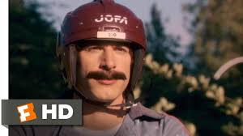
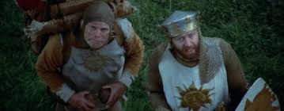
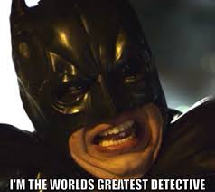
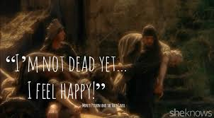
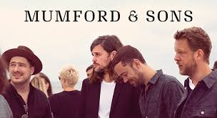

I chose most of these videos because they are hilarious parts of movies and shows that I quote pretty much daily. My family and I watch the office basically every day. I watched it when I was younger and rarely missed an episode. I think it will be a memory in my kids and my own minds for our entire lives. Hot Rod is a movie that one of my friends and I quote way too often, but it reminds me of a fun time in my life. Monty Python is just a classic. I remember watching that when I was younger and I didn;t totally get it but it was still good, now the first 30 minutes or so are firmly entrenched in my mind. The songs have each been listened to on repeat at different crazy times in my life and still remind me of people and times in my life.
| Video Name | Video Description | Video Length | Image |
|---|---|---|---|
| The Office: Michael Scott - Why Are You The Way That You Are? | Clip of a classic quote from The Office | :20 | |
| Hot Rod - Cool Beans | Short clip from the movie Hot Rod where Rod and his brother randomly say "Cool Beans" ...a lot | :44 |  |
| She's a witch! | Funny scene from Monty Python and the Holy Grail showing the "trial" of a suspected witch. Classic! | 4:15 |  |
| Batman Meets the Riddler | Short skit from College Humor where batman meets the Riddler and Batman struggles with simple riddles | 3:46 |  |
| Monty Python Not Dead Yet clip | Short clip from Monty Python and The Holy Grail showing an man trying to get an elderly man picked up as a dead person, though he is not actually dead, So good! | :49 |  |
| Season 6 Bloopers Part 1 - The Office US | Bloopers from season 6 of the funniest show ever | 10:05 | |
| Below My Feet | One of my favorite songs from Mumford and Sons | 4:51 |  |
| Post Malone - Take What You Want (Audio) ft. Ozzy Osbourne, Travis Scott | Cool collaboration with Post Malone and Ozzy Osbourne | 3:50 | |
| King of Leon - Closer | Great song by the band Kings of Leon | 4:00 |